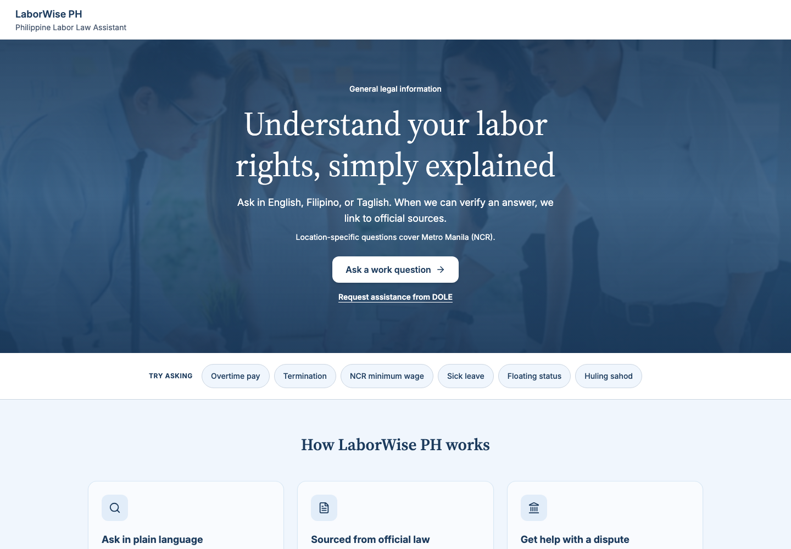

LaborWise
Deploying a labor-rights chatbot with a safer release path.
- My role
- Backend and Cloud Developer
- Status
- Completed November 2026
- Platform
- Azure Container Apps
The work
I deployed a containerized FastAPI backend for a Philippine labor-rights chatbot, isolated staging from production, and hardened GitHub Actions releases with health and readiness checks and previous-revision rollback.
I also integrated FAISS retrieval with Supabase and private Cloudflare R2, and added citation checks and regression tests to guard against historical wage rates appearing in current answers.
The public application

System components
The diagram summarizes the components described in my internship resume. It omits private configuration and does not represent a live infrastructure inspection.
Deployment and recovery
Deliver the container
GitHub Actions handles the release of the containerized API.
Check before changing traffic
Health and readiness checks run before traffic cutover. Production and staging remain isolated.
Recover when checks fail
Failed deployment checks trigger rollback to the previous Azure revision.
This is an explanatory release summary from my internship project description. Private workflow files, deployment run logs, infrastructure identifiers, and configuration are not published here.
Correctness beyond uptime
A healthy endpoint is only part of this system's reliability. Citation checks and regression tests also address whether an answer uses the appropriate source material, including keeping historical wage rates out of current answers.
Evidence and access
The repository is private. This page provides a sanitized account of my role, the system components, and the release safeguards. The public landing-page capture is provided above; backend safeguards are described from the internship project account.